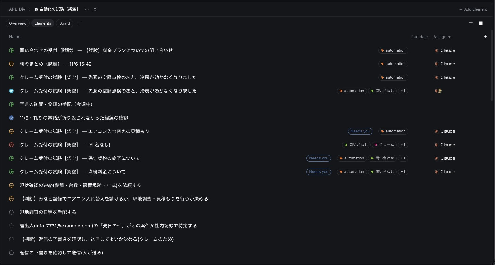
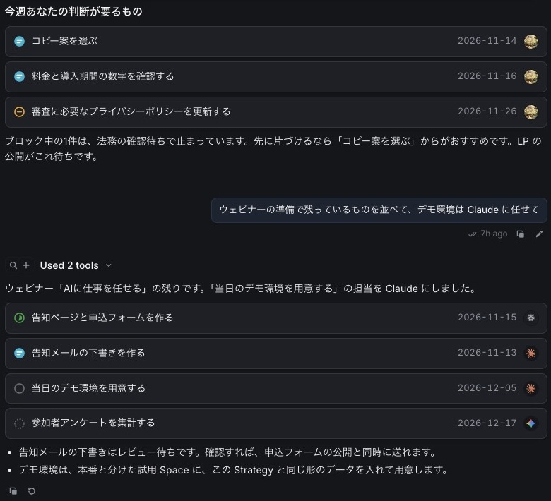
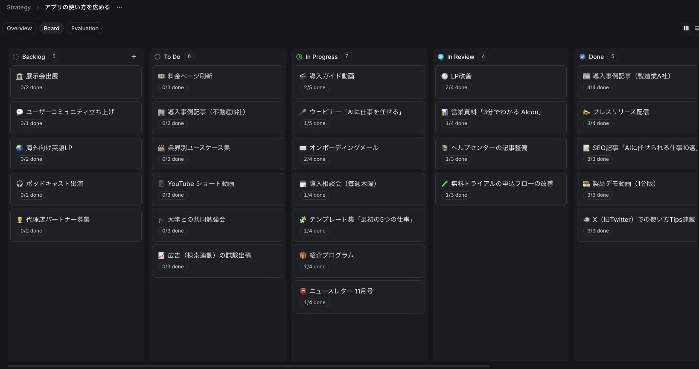
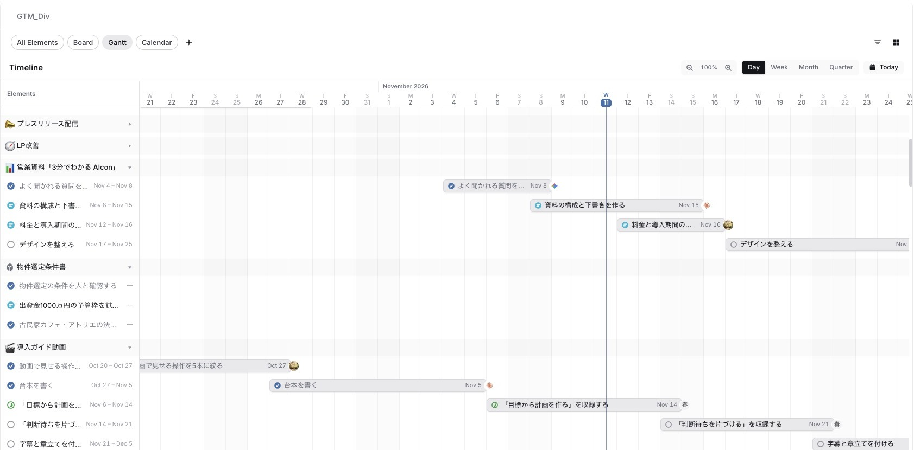

届いた仕事を、AIが片づける。
AI基盤Athenaが情報を集め、最小の作業に分けて担当を決めます。取り消せない操作だけ、人の承認を待ちます。
- 集める届いたとき、または毎朝9時に受け取る
- 振り分ける分類して記録し、人かAIの担当を決める
- 人が判断する判断待ちを上から見て、承認か差し戻し
- 確かめて完了別のAIが成果物を確かめる



AIがやること、人が決めること。
すぐ使える業務のAI Agent。どれも、取り消せない操作の手前で止まります。
| 業務 | AIがやること | 人が決めること |
|---|---|---|
| 問い合わせの受付と振り分け | 分類して記録し、返信を下書きする | 送るかどうか |
| 問い合わせの朝のまとめ | 前日分を集計し、未対応と高リスクを先頭に並べる | どれから手を付けるか |
| クレームの分析と改善提案 | 毎週、原因を分類して改善案を出す | 採用するかどうか |
| 営業のフォロー | 商談後の連絡を洗い出して下書きする | 送る内容 |
| 開発 | 隔離した環境で変更し、テストを通してPRにする | マージするかどうか |
止まるべきところで止まる仕組み
- 承認
- 実行する入力そのものに承認を結び付ける。AIは自分で承認できない。
- 検証役
- 別のAIが成果物を確かめ、人の判定と食い違うやり方は見直す。
- 自動停止
- 連続した書き込み、エラーの増加、初めての送信先で止まる。
- 費用の上限
- 月の予算を決め、それを超えて動かない。
- 資格情報を見せない
- ログイン情報は保管庫に置き、AIの文脈には出さない。
- すべて記録に残る
- 誰が何を見られるかはデータベースで判定し、実行は記録される。
道具を渡して、終わりにしない。
エンジニアが現場に入り、どこで仕事が詰まっているかを一緒に見るところから始めます。
現場の仕事を一緒に見る
届く情報、書き写し、判断の場面を洗い出し、AIと人の持ち分を分ける。
成功条件を決める
「一次返信の中央値4時間以内」のように、数字で確かめられる目標を先に置く。
つないで、試し実行する
書き込みを止めた状態で流し、行う操作と結果をチームで確かめる。
運用に乗せて、直す
判断待ちを毎朝見る習慣を作り、成功条件と照らして見直す。
任せる範囲は、慣れに合わせて広げる
最初は「毎回聞く」から。
毎回聞く外部への書き込みは、毎回人の承認を待ちます。
自動差し戻しのない実行が続いた操作から、任せる範囲が広がります。
聞かない許可した範囲は承認なしで実行します。取り消せない操作は除きます。
使い手が育つと、AIは検索窓でなくなる。
使いこなせる人とそうでない人の差が、そのまま成果の差になり始めています。
経営・管理職向けfor leaders
何をAIに任せ、何を人が判断するか。目的と成功条件の書き方、承認の設計を学ぶ。
現場向けハンズオンfor teams
自分の業務を題材に、頼み方、確かめ方、差し戻し方を手を動かして覚える。
社内の推進役を育てるfor champions
自動化を作り、試し実行し、運用を回せる人を社内に置く。外部に頼りきりにしない。
料金
| プラン | 中身 | 含むもの | 料金 | 相談 |
|---|---|---|---|---|
| Pilot4週間の試験導入 | 1つの業務、1つのチームで、Claywareを動かして効果を測る。 | 業務の洗い出しと設計、接続と試し実行、4週間後の効果レポート | 個別見積 | 相談する |
| Transformation導入支援と月額利用、私たちのおすすめ | プロダクト、チェンジマネジメント、教育をまとめて、部署や会社の単位で進める。 | Claywareの利用、エンジニアの伴走、立場ごとの研修、成功条件の定期レビュー | 個別見積 | 相談する |
| Education研修とワークショップ | まずは人から。経営向け、現場向け、推進役向けの研修だけを受ける。 | 半日から複数回のプログラム、自社の業務を題材にしたハンズオン、オンラインと訪問 | 個別見積 | 相談する |
更新情報
- Claywareのサイトを公開
プロダクト、チェンジマネジメント、教育の3つのサービスを始めました。
- Clayware v4
届いた情報をAI Agentが分類し、担当つきの作業にする自動化。試し実行で操作を事前に確かめられます。
- 判断待ちの外部通知
判断待ちをメールやSlackにも届けます。